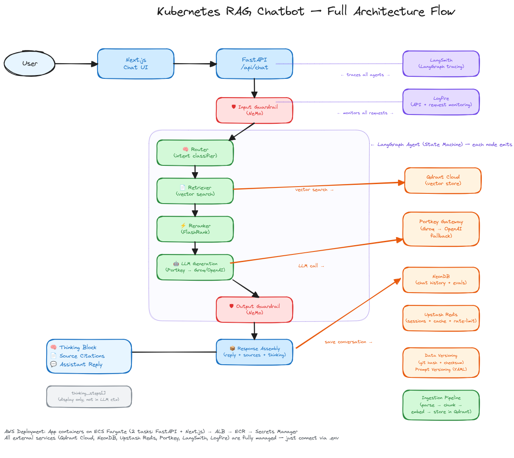

what we’re building
A Kubernetes assistant powered by Retrieval-Augmented Generation. You ask questions about pods, deployments, autoscaling, or any K8s topic in plain English — the system retrieves relevant documentation from a vector database, reranks the results, and generates a grounded answer using a large language model. Every step is transparent: you see the thinking trace, the source chunks, and the confidence scores.
The stack is designed for production from day one. A LangGraph agent orchestrates a six-node
pipeline. Portkey sits between the agent and upstream LLMs (Groq primary, OpenAI fallback) with
observability, caching, and failover. Gemini gemini-embedding-001 produces 3072-dimensional
embeddings stored in Qdrant Cloud with COSINE distance. FlashRank cross-encoders rerank the
top 10 results down to the 5 most relevant chunks.
The frontend is a Next.js App Router application with a sidebar for conversation management, expandable thinking traces, and source citation cards. The backend is FastAPI with asyncpg connecting to NeonDB for persistence and Upstash Redis for response caching.
the architecture
The full architecture is documented in the diagram below. Each component runs as a managed service or is containerized for ECS Fargate deployment.

agent pipeline
The LangGraph agent executes six nodes in sequence:
1. input guard — classifies whether the query is Kubernetes-related using
a dedicated LLM call. Non-K8s queries are rejected early.
2. router — identifies the intent category (architecture, autoscaling,
job management, monitoring, cronjobs, general K8s) to optionally narrow the search scope.
3. retrieve — embeds the query with Gemini and searches Qdrant for the
10 most similar document chunks.
4. rerank — applies a FlashRank cross-encoder to rescore and select the
top 5 chunks, improving precision over raw vector similarity.
5. generate — builds a prompt with the reranked context and calls the
LLM via Portkey to produce the final answer.
6. output guard — verifies that the answer is grounded in the retrieved
sources, returning a groundedness fraction.
Thinking steps from each node are captured separately from the conversation messages and rendered as an expandable section in the UI. This keeps the chat clean while allowing full transparency into the agent’s reasoning.
data flow
User Query ↓ POST /api/chat ↓ Check Redis cache (SHA256 query hash) ↓ LangGraph Agent (6 nodes) ↓ Save to NeonDB (conversation + messages) ↓ Cache response in Redis (24h TTL) ↓ Return to Frontend
key stack decisions
Portkey over direct API calls. Portkey provides a unified gateway with
configurable fallback routing, retry logic, and observability. The primary route is Groq
(llama-3.3-70b-versatile) and the fallback is OpenAI. This means if Groq is
rate-limited or down, requests automatically route to OpenAI without code changes.
Gemini embeddings. We use Google’s gemini-embedding-001
model which produces 3072-dimensional vectors with a free-tier rate limit of 100 req/min.
Batching is set to 10 with exponential backoff retry (30s initial, +5s per attempt, max 5).
Qdrant Cloud. Chosen for its managed vector database with COSINE distance support and a straightforward gRPC/REST API. Collection is configured with 3072 dimensions. Upserts use 120s timeout and 50-point batches.
FlashRank over Cohere/LLM reranking. The ms-marco-MiniLM-L-12-v2
cross-encoder runs locally with no API costs or latency. It reranks 10 chunks to 5 in
under 100ms on CPU.
NeonDB (serverless PostgreSQL). We use asyncpg for connection pooling and
SQLAlchemy async for ORM. Neon’s URL includes sslmode and
channel_binding parameters which are stripped for asyncpg compatibility.
Upstash Redis for caching. Response caching uses SHA256 query hashes with 24-hour TTL. On cache hit, the entire agent pipeline is skipped — zero LLM calls. The REST API is accessed via HTTPS (port 443) to avoid firewall issues with the Redis protocol port (6379).
future steps
The system works end-to-end today, but there’s a long roadmap ahead:
evaluation pipeline. Integrate RAGAS and DeepEval to score retrieval precision,
answer faithfulness, and answer relevancy automatically. Store results in the
EvalRun table with prompt version tracking.
prompt versioning. Prompts are already loaded from YAML files with a
version field. The eval pipeline should log the prompt version used for each
generation so we can A/B test prompt changes.
streaming. Currently the entire agent graph runs synchronously before returning. Streaming the generation token-by-token would dramatically improve perceived latency.
multi-modal support. Users should be able to upload architecture diagrams or YAML manifests and have the system analyze them visually or structurally.
semantic caching. The current cache matches exact queries. A semantic cache using embedding similarity would allow “how do I scale pods” and “how to autoscale deployments” to share a cache entry.
aws deployment. The Dockerfile and docker-compose.yml exist. Next step is pushing to ECR and deploying on ECS Fargate with CloudFront in front of the Next.js app.
links
opencode — the CLI tool used to build this
qdrant cloud — vector database
portkey — llm gateway
upstash redis
neondb — serverless postgres
gemini embeddings
groq — ultra-fast llm inference
Till then, keep experimenting :)